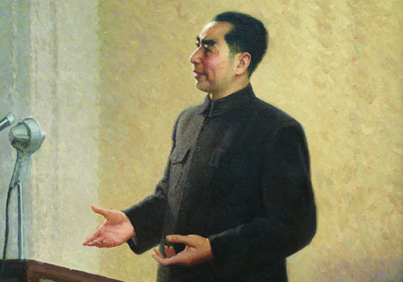

万隆会议

1955年4月18-24日，国务院总理周恩来率领中华人民共和国代表团参加了在印度尼西亚万隆召开的亚非国家首脑会议，并在会上作了几次重要发言。周恩来提出亚非国家应采取「求同存异」的方针处理国与国的关系。与会成员一致通过了《亚非会议最后公报》，提出以和平共处五项原则为基础的十项指导国际关系的原则。周恩来在万隆会议期间的杰出表现，使他赢得了很高的国际声望。
1955年4月18-24日，国务院总理周恩来率领中华人民共和国代表团参加了在印度尼西亚万隆召开的亚非国家首脑会议，并在会上作了几次重要发言。周恩来提出亚非国家应采取「求同存异」的方针处理国与国的关系。与会成员一致通过了《亚非会议最后公报》，提出以和平共处五项原则为基础的十项指导国际关系的原则。周恩来在万隆会议期间的杰出表现，使他赢得了很高的国际声望。